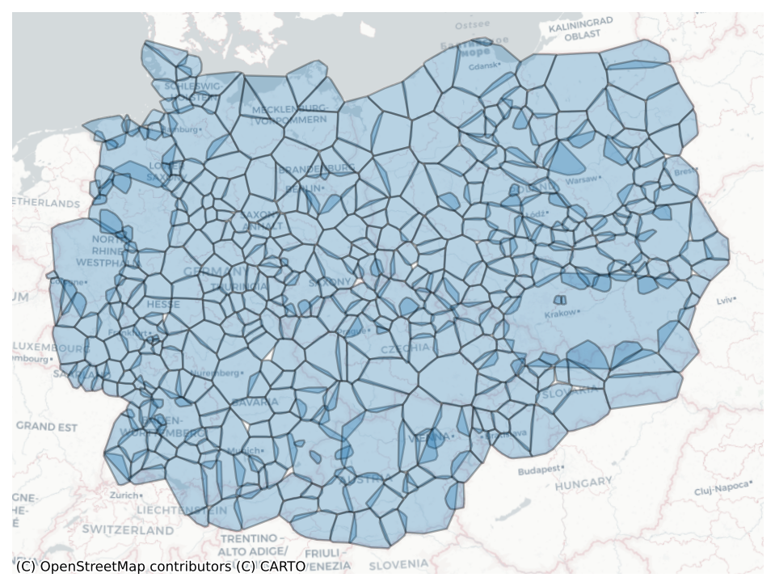
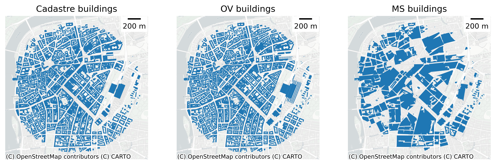
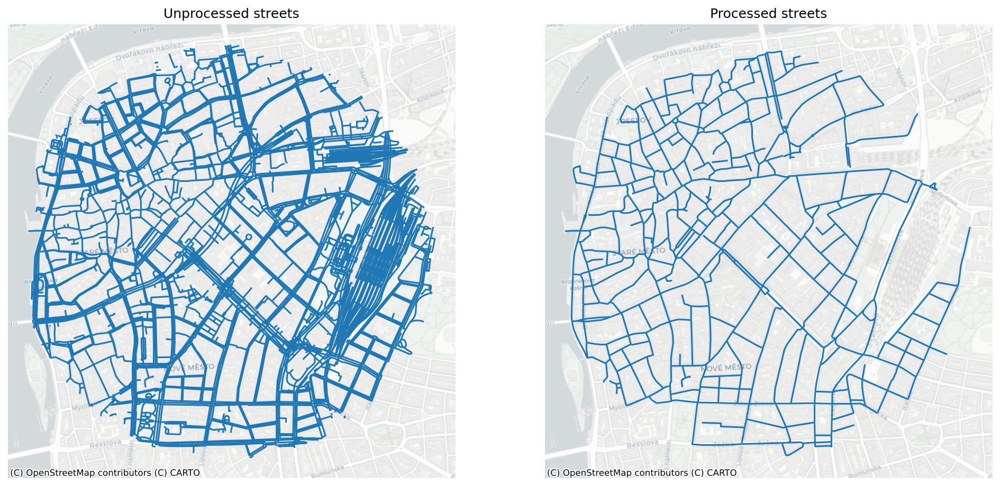
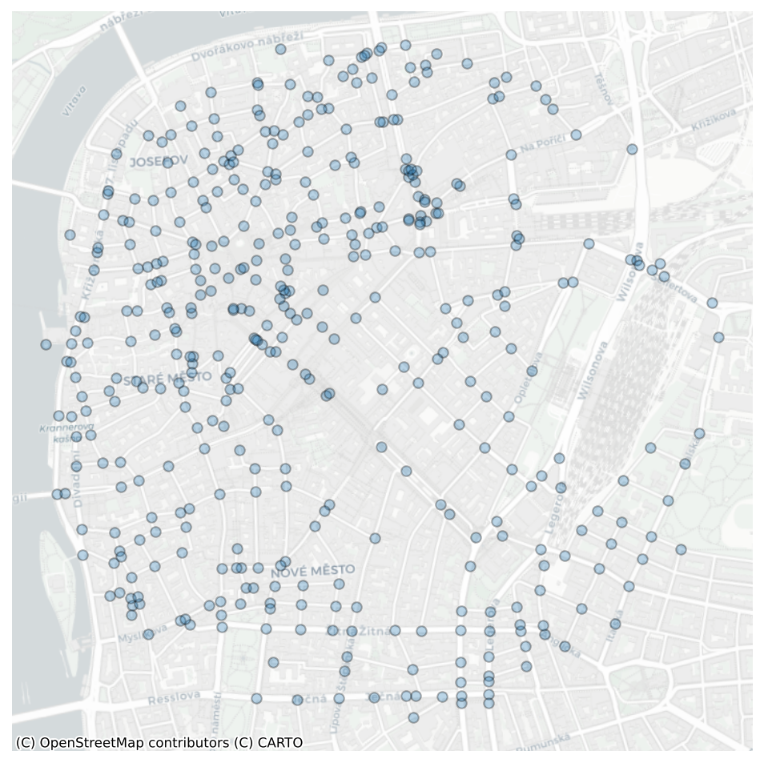
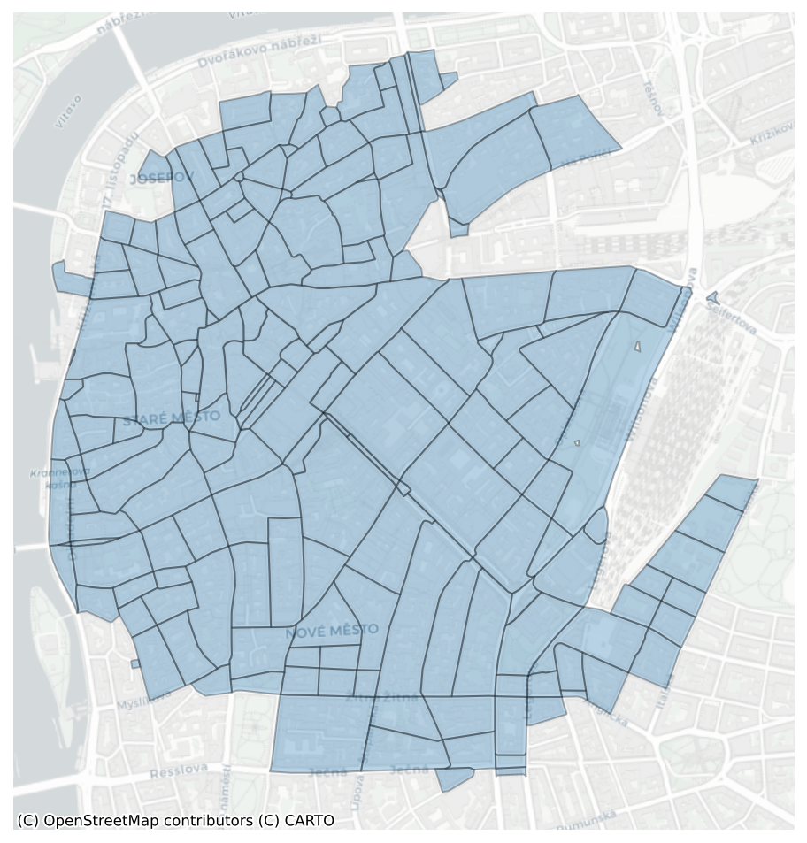
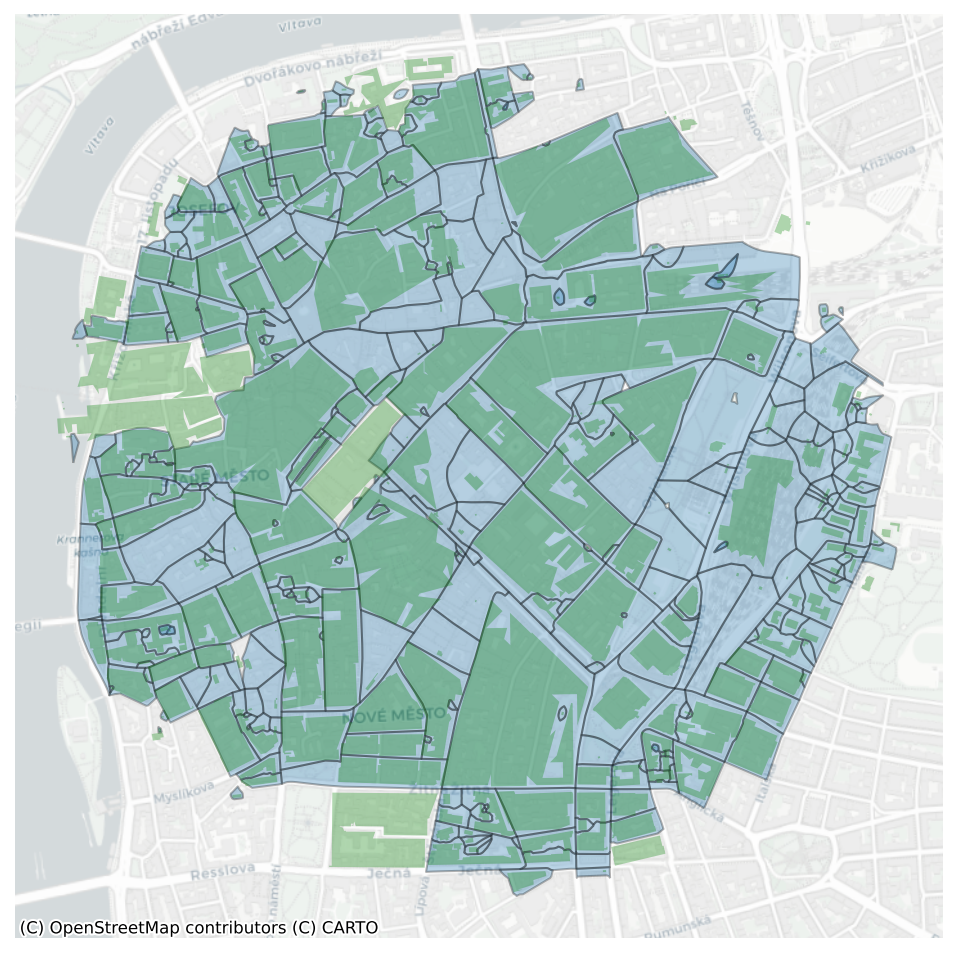
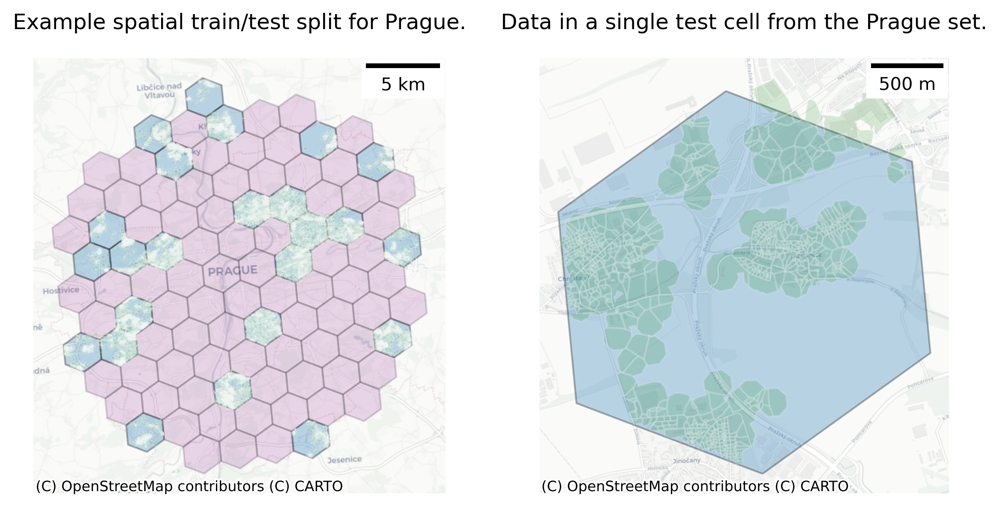
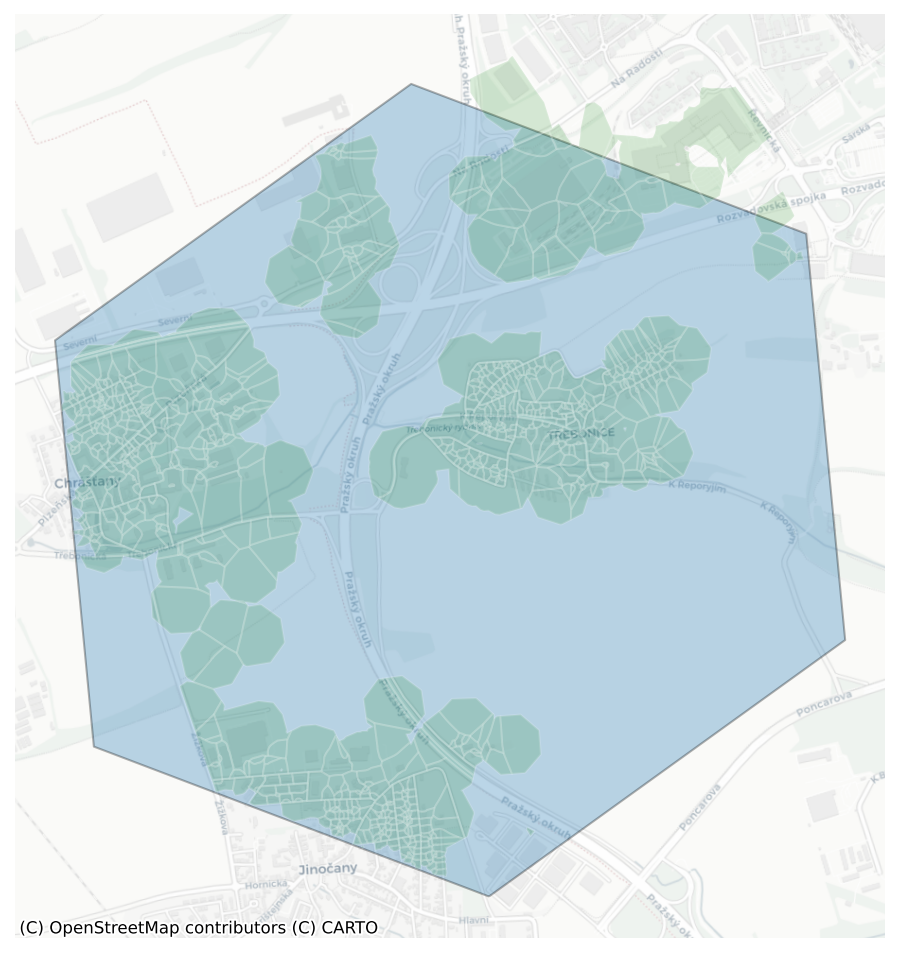

import geopandas as gpd
import numpy as np
import lonboard
from core.utils import used_keys
from lonboard.colormap import apply_continuous_cmap
import matplotlib as mpl
from mapclassify import classify
from sidecar import Sidecar
import contextily as cx
import matplotlib.pyplot as plt
from matplotlib_scalebar.scalebar import ScaleBarGenerate figures and tables
Define data path
chars_dir = "/data/uscuni-eurofab/processed_data/chars/"Define region
# this is prague
ms_region = 65806
ov_region = 66292
cadastre_region = 69333# read the building data
cadastre_buildings = gpd.read_parquet(f"/data/uscuni-ulce/processed_data/clusters/clusters_{cadastre_region}_v3.pq")
ms_buildings = gpd.read_parquet(f"{chars_dir}buildings_chars_{ms_region}.parquet")
ov_buildings = gpd.read_parquet(f"/data/uscuni-eurofab-overture/processed_data/chars/buildings_chars_{ov_region}.parquet")# define an area of interest
central_prague = ms_buildings.loc[[309311]].buffer(1000).geometry.iloc[0]SubRegions
regions_datadir = "/data/uscuni-eurofab/"
region_hulls = gpd.read_parquet(
regions_datadir + "regions/" + "ms_ce_region_hulls.parquet"
)
region_hulls.shape(474, 1)fig, ax = plt.subplots(figsize=(8,8), dpi=150)
region_hulls.plot(ax=ax, edgecolor='black', linewidth=1.2, alpha=.3)
cx.add_basemap(ax, crs=region_hulls.crs, source=cx.providers.CartoDB.Positron)
ax.axis('off')(np.float64(3967880.0),
np.float64(5376320.0),
np.float64(2551350.0),
np.float64(3604050.0))
fig.savefig('../figures/subregions.png')Buildings comparison
central_prague_buildings_cad = cadastre_buildings[cadastre_buildings.within(central_prague)]
central_prague_buildings_ms = ms_buildings[ms_buildings.within(central_prague)]
central_prague_buildings_ov = ov_buildings[ov_buildings.within(central_prague)]fig, ax = plt.subplots(1, 3, figsize=(12,4), dpi=300, sharex=True, sharey=True)
central_prague_buildings_cad.plot(ax=ax[0])
central_prague_buildings_ov.plot(ax=ax[1])
central_prague_buildings_ms.plot(ax=ax[2])
cx.add_basemap(ax[0], crs=central_prague_buildings_cad.crs, source=cx.providers.CartoDB.Positron)
cx.add_basemap(ax[1], crs=central_prague_buildings_ms.crs, source=cx.providers.CartoDB.Positron)
cx.add_basemap(ax[2], crs=central_prague_buildings_ms.crs, source=cx.providers.CartoDB.Positron)
ax[0].set_title('Cadastre buildings')
ax[1].set_title('OV buildings')
ax[2].set_title('MS buildings')
ax[0].add_artist(ScaleBar(1, location="upper right"))
ax[1].add_artist(ScaleBar(1, location="upper right"))
ax[2].add_artist(ScaleBar(1, location="upper right"))
ax[0].axis('off')
ax[1].axis('off')
ax[2].axis('off')(np.float64(4636521.531370498),
np.float64(4638734.046799175),
np.float64(3005277.8251857217),
np.float64(3007510.132427608))
fig.savefig('../figures/building_comparison.png')Streets
processed_streets = gpd.read_parquet(f"{chars_dir}streets_chars_{ms_region}.parquet")
unprocess_streets = gpd.read_parquet(f"/data/uscuni-eurofab/overture_streets/streets_{ms_region}.pq").set_crs(epsg=4326).to_crs(epsg=3035)central_prague_streets_unprocessed = unprocess_streets[unprocess_streets.within(central_prague)]
central_prague_streets_processed = processed_streets[processed_streets.within(central_prague)]fig, ax = plt.subplots(1, 2, figsize=(16,8), dpi=150, sharex=True, sharey=True)
central_prague_streets_unprocessed.plot(ax=ax[0])
central_prague_streets_processed.plot(ax=ax[1])
cx.add_basemap(ax[0], crs=central_prague_streets_unprocessed.crs, source=cx.providers.CartoDB.Positron)
cx.add_basemap(ax[1], crs=central_prague_streets_processed.crs, source=cx.providers.CartoDB.Positron)
ax[0].set_title('Unprocessed streets')
ax[1].set_title('Processed streets')
ax[0].axis('off')
ax[1].axis('off')(np.float64(4636539.931877843),
np.float64(4638726.33849539),
np.float64(3005293.9916570475),
np.float64(3007513.480936015))
fig.savefig('../figures/street_processing.png')Nodes
nodes = gpd.read_parquet(f"{chars_dir}nodes_chars_{ms_region}.parquet")central_prague_nodes = nodes[nodes.within(central_prague)]fig, ax = plt.subplots(figsize=(8,8), dpi=150)
central_prague_nodes.plot(ax=ax, edgecolor='black', linewidth=1, alpha=.3)
cx.add_basemap(ax, crs=central_prague_nodes.crs, source=cx.providers.CartoDB.Positron)
ax.axis('off')(np.float64(4636540.338943985),
np.float64(4638717.790106398),
np.float64(3005304.1213650415),
np.float64(3007480.923229088))
fig.savefig('../figures/nodes.png')Enclosures
enclosures = gpd.read_parquet(f"{chars_dir}enclosures_chars_{ms_region}.parquet")central_prague_enclosures = enclosures[enclosures.within(central_prague)]fig, ax = plt.subplots(figsize=(8,8), dpi=150)
central_prague_enclosures.plot(ax=ax, edgecolor='black', linewidth=1, alpha=.3)
cx.add_basemap(ax, crs=central_prague_enclosures.crs, source=cx.providers.CartoDB.Positron)
ax.axis('off')(np.float64(4636576.430342512),
np.float64(4638655.597694305),
np.float64(3005304.1213650415),
np.float64(3007480.923229088))
fig.savefig('../figures/enclosures.png')Tess cells
tess = gpd.read_parquet(f"{chars_dir}tessellations_chars_{ms_region}.parquet")central_prague_tess = tess[tess.within(central_prague)]fig, ax = plt.subplots(figsize=(8,8), dpi=150)
central_prague_tess.plot(ax=ax, edgecolor='black', linewidth=1, alpha=.3)
central_prague_buildings_ms.plot(ax=ax, color='green', alpha=.3)
cx.add_basemap(ax, crs=central_prague_tess.crs, source=cx.providers.CartoDB.Positron)
ax.axis('off')(np.float64(4636521.531370498),
np.float64(4638734.046799175),
np.float64(3005302.299285941),
np.float64(3007507.167075299))
fig.savefig('../figures/tessellations.png')Train/Test split
import h3
import shapely
import pandas as pd
import tobler%%time
tess = gpd.read_parquet(f"{chars_dir}tessellations_chars_{ms_region}.parquet")
bounds = tess.to_crs(epsg=4326).bounds
minx, miny, maxx, maxy = bounds.minx.min(), bounds.miny.min(), bounds.maxx.max(), bounds.maxy.max()CPU times: user 4.16 s, sys: 599 ms, total: 4.76 s
Wall time: 4.58 sresolution = 7bounds = shapely.box(minx, miny, maxx, maxy)
poly = h3.geo_to_cells(bounds, res=resolution)
res = [shapely.geometry.shape(h3.cells_to_geo([p])) for p in poly]
hexagons = gpd.GeoSeries(res, index=poly,name='geometry', crs='epsg:4326').to_crs(epsg=3035)inp, res = tess.sindex.query(hexagons, predicate='intersects')
# polygons should be assigned to only one h3 grid
duplicated = pd.Series(res).duplicated()
inp = inp[~duplicated]
res = res[~duplicated]
tess['hex'] = None
tess.iloc[res, -1] = hexagons.iloc[inp].index.valuesprague = central_prague.buffer(10_000)prague_hexagons = hexagons[hexagons.intersects(prague)]test_hex = prague_hexagons.sample(n=int(prague_hexagons.shape[0] * .25), random_state=123)
train_hex = prague_hexagons[~prague_hexagons.index.isin(test_hex.index)]
prague_tess = tess[tess['hex'].isin(test_hex.index) & tess['hex'].notna()]fig, ax = plt.subplots(1, 2, figsize=(8,4), dpi=300)
test_hex.plot(ax=ax[0], edgecolor='black', linewidth=1, alpha=.3)
train_hex.plot(ax=ax[0], color='purple', edgecolor='black', linewidth=1, alpha=.15)
prague_tess.plot(ax=ax[0], color='green', edgecolor='white', linewidth=1, alpha=.15)
cx.add_basemap(ax[0], crs=prague_tess.crs, source=cx.providers.CartoDB.Positron)
ax[0].add_artist(ScaleBar(1, location="upper right"))
ax[0].axis('off')
ax[0].set_title('Example spatial train/test split for Prague.')
test_hex[test_hex.index=='871e354a2ffffff'].plot(ax=ax[1], edgecolor='black', linewidth=1, alpha=.3)
prague_tess[prague_tess.hex == '871e354a2ffffff'].plot(ax=ax[1], color='green', edgecolor='white', linewidth=1, alpha=.15)
cx.add_basemap(ax[1], crs=prague_tess.crs, source=cx.providers.CartoDB.Positron)
ax[1].axis('off')
ax[1].add_artist(ScaleBar(1, location="upper right"))
ax[1].set_title('Data in a single test cell from the Prague set.')
fig.tight_layout()
fig.savefig('../figures/train_test_prague.png')ax.set_xlim(4625646.061025782 - 300, 4628467.091925441 + 300)
ax.set_ylim(2999830.87404187 - 300, 3002829.8147879103 + 300)
cx.add_basemap(ax, crs=prague_tess.crs, source=cx.providers.CartoDB.Positron)<Figure size 640x480 with 0 Axes>figfig.savefig('../figures/train_test_prague_zoom2.png')fig, ax = plt.subplots(figsize=(8,8), dpi=150)
test_hex[test_hex.index=='871e354a2ffffff'].plot(ax=ax, edgecolor='black', linewidth=1, alpha=.3)
prague_tess[prague_tess.hex == '871e354a2ffffff'].plot(ax=ax, color='green', edgecolor='white', linewidth=1, alpha=.15)
cx.add_basemap(ax, crs=prague_tess.crs, source=cx.providers.CartoDB.Positron)
ax.axis('off')(np.float64(4625646.061025782),
np.float64(4628467.091925441),
np.float64(2999830.87404187),
np.float64(3002829.8147879103))
fig.savefig('../figures/train_test_prague_zoom.png')# res = tobler.util.h3fy(tess.geometry, resolution=7)# res.explore()tess_4236 = tess.to_crs(epsg=4326)%%time
cell_column = tess_4236.geometry.head(100).apply(lambda x: h3.polyfill(x, res=5))CPU times: user 26.9 ms, sys: 47 μs, total: 27 ms
Wall time: 25.4 msh3.geo_to_cells(tess_4236.geometry.iloc[0], res=6)[]tess_4236.geometry.iloc[0]
h3.geo_to_h3shape(tess_4236.geometry.iloc[0])<LatLngPoly: [72]>res = h3.h3shape_to_cells(h3polys[0], res=5)import h3
import geopandas
import contextily as cx
import matplotlib.pyplot as plt
def plot_df(df, column=None, ax=None):
"Plot based on the `geometry` column of a GeoPandas dataframe"
df = df.copy()
df = df.to_crs(epsg=3857) # web mercator
if ax is None:
_, ax = plt.subplots(figsize=(8,8))
ax.get_xaxis().set_visible(False)
ax.get_yaxis().set_visible(False)
df.plot(
ax=ax,
alpha=0.5, edgecolor='k',
column=column, categorical=True,
legend=True, legend_kwds={'loc': 'upper left'},
)
cx.add_basemap(ax, crs=df.crs, source=cx.providers.CartoDB.Positron)
def plot_shape(shape, ax=None):
df = geopandas.GeoDataFrame({'geometry': [shape]}, crs='EPSG:4326')
plot_df(df, ax=ax)why we using spatial kfold - predictive model
region_id = 4182
tessellations_dir = graph_dir = enclosures_dir = '../data/ms_buildings/'
chars_dir = '../data/ms_buildings/chars/'primary = pd.read_parquet(chars_dir + f'primary_chars_{region_id}.parquet')tessellation = gpd.read_parquet(
tessellations_dir + f"tessellation_{region_id}.parquet"
)X_train = pd.read_parquet(chars_dir + f'primary_chars_{region_id}.parquet')from sklearn.model_selection import train_test_splitX_train, X_test, y_train, y_test = train_test_split(X_train_subset, y, test_size=0.15, random_state=42)clf = RandomForestClassifier(random_state=0, n_jobs=-1, verbose=True)%%time
clf.fit(X_train, y_train)[Parallel(n_jobs=-1)]: Using backend ThreadingBackend with 20 concurrent workers.
[Parallel(n_jobs=-1)]: Done 10 tasks | elapsed: 1.5sCPU times: user 2min 24s, sys: 345 ms, total: 2min 24s
Wall time: 8.15 s[Parallel(n_jobs=-1)]: Done 100 out of 100 | elapsed: 8.0s finishedRandomForestClassifier(n_jobs=-1, random_state=0, verbose=True)In a Jupyter environment, please rerun this cell to show the HTML representation or trust the notebook.
On GitHub, the HTML representation is unable to render, please try loading this page with nbviewer.org.
RandomForestClassifier(n_jobs=-1, random_state=0, verbose=True)
clf.score(X_test, y_test)[Parallel(n_jobs=20)]: Using backend ThreadingBackend with 20 concurrent workers.
[Parallel(n_jobs=20)]: Done 10 tasks | elapsed: 0.0s
[Parallel(n_jobs=20)]: Done 100 out of 100 | elapsed: 0.1s finished0.9484593837535014from sklearn import model_selection
gkf = model_selection.StratifiedGroupKFold(n_splits=5)
splits = gkf.split(
X_train_subset,
y,
groups=tessellation_subset.enclosure_index,
)
split_label = np.empty(len(X_train_subset), dtype=float)
for i, (train, test) in enumerate(splits):
split_label[test] = itrain = split_label != 0
X_train = X_train_subset.loc[train]
y_train = y[train]
test = split_label == 0
X_test = X_train_subset.loc[test]
y_test = y[test]rf_spatial_cv = RandomForestClassifier(random_state=0, n_jobs=-1)
rf_spatial_cv.fit(X_train, y_train)RandomForestClassifier(n_jobs=-1, random_state=0)In a Jupyter environment, please rerun this cell to show the HTML representation or trust the notebook.
On GitHub, the HTML representation is unable to render, please try loading this page with nbviewer.org.
RandomForestClassifier(n_jobs=-1, random_state=0)
rf_spatial_cv.score(X_test, y_test)0.6201246008062405new_labels = clf.predict(X_train_subset)[Parallel(n_jobs=20)]: Using backend ThreadingBackend with 20 concurrent workers.
[Parallel(n_jobs=20)]: Done 10 tasks | elapsed: 0.1s
[Parallel(n_jobs=20)]: Done 100 out of 100 | elapsed: 0.6s finishednew_labels = rf_spatial_cv.predict(X_train_subset)All Scores
Test distribution
from core.generate_predictions import get_cluster_names, get_level_cut
import glob
import pandas as pd
test_countries_names = ['SK', 'PL', 'DE', 'AT', 'CZ', 'Random', 'Spatial']
column_order = ['Random', 'Spatial', 'OoS', 'SK', 'PL', 'DE', 'AT', 'CZ']
mapping_level = 4def get_test_counts(traintestdir, mapping_level):
all_cases = []
for i in range(1, 8):
ov_test_file = f'{traintestdir}{i}.pq'
level_cut = get_level_cut(mapping_level)
test_classes = pd.read_parquet(ov_test_file)['final_without_noise'].map(level_cut.to_dict())
test_classes = test_classes.value_counts()
cluster_names = get_cluster_names(mapping_level)
test_classes.index = test_classes.index.map(cluster_names)
test_classes = test_classes.sort_index()
test_classes.name = test_countries_names[i - 1]
all_cases.append(test_classes)
all_cases = pd.DataFrame(all_cases)
all_cases.columns.name = ''
all_cases = all_cases.T
return all_casesms_counts = get_test_counts('/data/uscuni-eurofab/processed_data/train_test_data/testing_labels', 4)
ms_counts.loc['Total', :] = ms_counts.sum(axis=0)(ms_counts[['Random', 'Spatial', 'SK', 'PL', 'DE', 'AT', 'CZ']] / 1_000).astype(int).style.format("{:,d}")| Random | Spatial | SK | PL | DE | AT | CZ | |
|---|---|---|---|---|---|---|---|
| Aligned Winding Streets | 1,308 | 1,312 | 474 | 406 | 5,219 | 245 | 195 |
| Compact Development | 1,067 | 1,083 | 160 | 75 | 5,041 | 33 | 23 |
| Cul-de-Sac Layout | 1,023 | 1,027 | 358 | 400 | 3,798 | 344 | 212 |
| Dense Connected Developments | 735 | 750 | 92 | 268 | 2,971 | 138 | 207 |
| Dense Standalone Buildings | 818 | 785 | 273 | 1,224 | 1,899 | 358 | 338 |
| Dispersed Linear Development | 136 | 133 | 36 | 613 | 31 | 0 | 2 |
| Extensive Wide-Spaced Developments | 113 | 104 | 26 | 329 | 130 | 20 | 61 |
| Large Interconnected Blocks | 36 | 33 | 3 | 8 | 138 | 21 | 11 |
| Large Utilitarian Development | 133 | 131 | 11 | 134 | 429 | 43 | 46 |
| Linear Development | 391 | 396 | 139 | 1,526 | 254 | 11 | 27 |
| Sparse Open Layout | 1,626 | 1,621 | 59 | 3,744 | 1,486 | 1,319 | 1,521 |
| Sparse Road-Linked Development | 1,095 | 1,065 | 428 | 1,697 | 3,005 | 177 | 169 |
| Sparse Rural Development | 562 | 540 | 30 | 2,483 | 65 | 132 | 101 |
| Total | 9,049 | 8,987 | 2,095 | 12,913 | 24,473 | 2,846 | 2,919 |
ov_counts = get_test_counts('/data/uscuni-eurofab-overture/processed_data/train_test_data/testing_labels', 4)
ov_counts.loc['Total', :] = ov_counts.sum(axis=0)(ov_counts[['Random', 'Spatial', 'SK', 'PL', 'DE', 'AT', 'CZ']] / 1_000).astype(int).style.format("{:,d}")| Random | Spatial | SK | PL | DE | AT | CZ | |
|---|---|---|---|---|---|---|---|
| Aligned Winding Streets | 1,906 | 1,911 | 602 | 593 | 7,681 | 334 | 320 |
| Compact Development | 1,632 | 1,646 | 201 | 127 | 7,708 | 75 | 48 |
| Cul-de-Sac Layout | 1,354 | 1,362 | 446 | 484 | 5,152 | 429 | 260 |
| Dense Connected Developments | 1,850 | 1,843 | 157 | 662 | 7,494 | 262 | 676 |
| Dense Standalone Buildings | 1,062 | 1,073 | 324 | 1,540 | 2,524 | 465 | 454 |
| Dispersed Linear Development | 163 | 167 | 40 | 740 | 35 | 0 | 3 |
| Extensive Wide-Spaced Developments | 175 | 186 | 63 | 468 | 215 | 35 | 94 |
| Large Interconnected Blocks | 216 | 218 | 11 | 45 | 872 | 82 | 70 |
| Large Utilitarian Development | 184 | 178 | 15 | 163 | 632 | 55 | 57 |
| Linear Development | 468 | 464 | 173 | 1,797 | 320 | 11 | 41 |
| Sparse Open Layout | 1,924 | 1,901 | 65 | 4,353 | 1,927 | 1,498 | 1,777 |
| Sparse Road-Linked Development | 1,387 | 1,377 | 531 | 2,045 | 3,921 | 226 | 213 |
| Sparse Rural Development | 639 | 643 | 42 | 2,811 | 82 | 150 | 108 |
| Total | 12,966 | 12,974 | 2,675 | 15,832 | 38,570 | 3,627 | 4,127 |
overall_accs = [pd.read_csv(f1fp).set_index('Unnamed: 0')['0'] for f1fp in sorted(glob.glob(f'/data/uscuni-eurofab/processed_data/results/overall_acc_{mapping_level}*'))]
overall_accs = pd.concat(overall_accs, axis=1)
overall_accs.index.name = ''
# overall_accs.columns = pd.MultiIndex.from_tuples((t, name) for t,name in zip(['MS building footprints'] * len(test_countries_names), test_countries_names))
overall_accs.columns = test_countries_names
overall_accs['OoS'] = overall_accs[['SK', 'PL', 'DE', 'AT', 'CZ',]].mean(axis=1)
overall_accs[column_order].style.format(precision=2)| Random | Spatial | OoS | SK | PL | DE | AT | CZ | |
|---|---|---|---|---|---|---|---|---|
| Weighted F1 | 0.59 | 0.52 | 0.38 | 0.38 | 0.42 | 0.36 | 0.44 | 0.29 |
| Micro F1 | 0.59 | 0.52 | 0.37 | 0.38 | 0.42 | 0.37 | 0.40 | 0.28 |
| Macro F1 | 0.59 | 0.49 | 0.30 | 0.30 | 0.35 | 0.31 | 0.30 | 0.26 |
overall_accs2 = [pd.read_csv(f1fp).set_index('Unnamed: 0')['0'] for f1fp in sorted(glob.glob(f'/data/uscuni-eurofab-overture/processed_data/results/overall_acc_{mapping_level}*'))]
overall_accs2 = pd.concat(overall_accs2, axis=1)
overall_accs2.index.name = ''
# overall_accs2.columns = pd.MultiIndex.from_tuples((t, name) for t,name in zip(['Overture building footprints'] * len(test_countries_names), test_countries_names))
overall_accs2.columns = test_countries_names
overall_accs2['OoS'] = overall_accs2[['SK', 'PL', 'DE', 'AT', 'CZ',]].mean(axis=1)
overall_accs2[column_order].style.format(precision=2)| Random | Spatial | OoS | SK | PL | DE | AT | CZ | |
|---|---|---|---|---|---|---|---|---|
| Weighted F1 | 0.70 | 0.55 | 0.41 | 0.35 | 0.43 | 0.41 | 0.49 | 0.39 |
| Micro F1 | 0.70 | 0.54 | 0.40 | 0.34 | 0.43 | 0.41 | 0.46 | 0.36 |
| Macro F1 | 0.71 | 0.54 | 0.34 | 0.30 | 0.38 | 0.35 | 0.36 | 0.32 |
f1s = [pd.read_csv(f1fp).set_index('Unnamed: 0')['0'] for f1fp in sorted(glob.glob(f'/data/uscuni-eurofab/processed_data/results/class_f1s_{mapping_level}*'))]
f1s = pd.concat(f1s, axis=1)
f1s.index.name = ''
f1s.columns = test_countries_names
f1s['OoS'] = f1s[['SK', 'PL', 'DE', 'AT', 'CZ',]].mean(axis=1)
f1s[column_order].sort_index().style.format(precision=2)| Random | Spatial | OoS | SK | PL | DE | AT | CZ | |
|---|---|---|---|---|---|---|---|---|
| Aligned Winding Streets | 0.51 | 0.45 | 0.28 | 0.35 | 0.21 | 0.36 | 0.28 | 0.18 |
| Compact Development | 0.59 | 0.55 | 0.13 | 0.15 | 0.09 | 0.24 | 0.09 | 0.08 |
| Cul-de-Sac Layout | 0.57 | 0.52 | 0.43 | 0.52 | 0.31 | 0.52 | 0.47 | 0.32 |
| Dense Connected Developments | 0.50 | 0.46 | 0.33 | 0.29 | 0.29 | 0.45 | 0.33 | 0.29 |
| Dense Standalone Buildings | 0.63 | 0.56 | 0.54 | 0.53 | 0.65 | 0.38 | 0.55 | 0.57 |
| Dispersed Linear Development | 0.91 | 0.64 | 0.19 | 0.17 | 0.34 | 0.18 | 0.06 | 0.18 |
| Extensive Wide-Spaced Developments | 0.41 | 0.31 | 0.25 | 0.25 | 0.46 | 0.13 | 0.19 | 0.25 |
| Large Interconnected Blocks | 0.36 | 0.28 | 0.24 | 0.22 | 0.17 | 0.37 | 0.30 | 0.15 |
| Large Utilitarian Development | 0.49 | 0.40 | 0.32 | 0.23 | 0.34 | 0.36 | 0.34 | 0.34 |
| Linear Development | 0.73 | 0.50 | 0.28 | 0.37 | 0.43 | 0.29 | 0.13 | 0.16 |
| Sparse Open Layout | 0.62 | 0.56 | 0.31 | 0.14 | 0.36 | 0.32 | 0.50 | 0.24 |
| Sparse Road-Linked Development | 0.57 | 0.46 | 0.27 | 0.40 | 0.32 | 0.29 | 0.17 | 0.19 |
| Sparse Rural Development | 0.79 | 0.69 | 0.39 | 0.29 | 0.54 | 0.17 | 0.49 | 0.47 |
f1s2 = [pd.read_csv(f1fp).set_index('Unnamed: 0')['0'] for f1fp in sorted(glob.glob(f'/data/uscuni-eurofab-overture/processed_data/results/class_f1s_{mapping_level}*'))]
f1s2 = pd.concat(f1s2, axis=1)
f1s2.index.name = ''
f1s2.columns = test_countries_names
f1s2['OoS'] = f1s2[['SK', 'PL', 'DE', 'AT', 'CZ',]].mean(axis=1)
f1s2[column_order].sort_index().style.format(precision=2)| Random | Spatial | OoS | SK | PL | DE | AT | CZ | |
|---|---|---|---|---|---|---|---|---|
| Aligned Winding Streets | 0.61 | 0.46 | 0.29 | 0.28 | 0.27 | 0.37 | 0.31 | 0.25 |
| Compact Development | 0.66 | 0.55 | 0.16 | 0.09 | 0.12 | 0.30 | 0.18 | 0.11 |
| Cul-de-Sac Layout | 0.65 | 0.51 | 0.42 | 0.48 | 0.31 | 0.50 | 0.47 | 0.32 |
| Dense Connected Developments | 0.67 | 0.58 | 0.43 | 0.30 | 0.44 | 0.58 | 0.39 | 0.44 |
| Dense Standalone Buildings | 0.69 | 0.57 | 0.53 | 0.53 | 0.63 | 0.36 | 0.53 | 0.61 |
| Dispersed Linear Development | 0.96 | 0.65 | 0.16 | 0.09 | 0.31 | 0.16 | 0.07 | 0.19 |
| Extensive Wide-Spaced Developments | 0.52 | 0.36 | 0.27 | 0.30 | 0.47 | 0.13 | 0.23 | 0.22 |
| Large Interconnected Blocks | 0.69 | 0.60 | 0.46 | 0.41 | 0.35 | 0.57 | 0.57 | 0.42 |
| Large Utilitarian Development | 0.60 | 0.44 | 0.37 | 0.28 | 0.37 | 0.42 | 0.38 | 0.41 |
| Linear Development | 0.88 | 0.53 | 0.30 | 0.37 | 0.44 | 0.29 | 0.21 | 0.18 |
| Sparse Open Layout | 0.74 | 0.61 | 0.36 | 0.07 | 0.38 | 0.34 | 0.61 | 0.38 |
| Sparse Road-Linked Development | 0.72 | 0.49 | 0.29 | 0.37 | 0.34 | 0.32 | 0.21 | 0.21 |
| Sparse Rural Development | 0.88 | 0.71 | 0.41 | 0.35 | 0.55 | 0.15 | 0.50 | 0.47 |